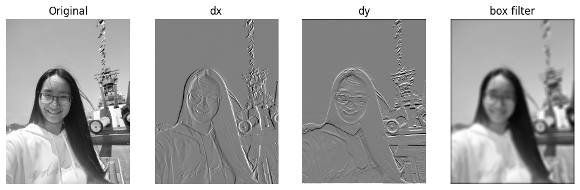
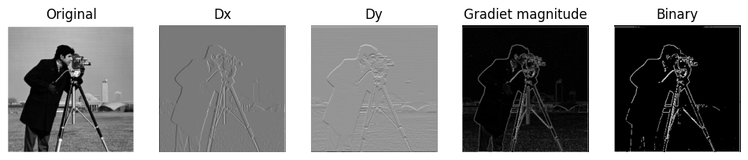
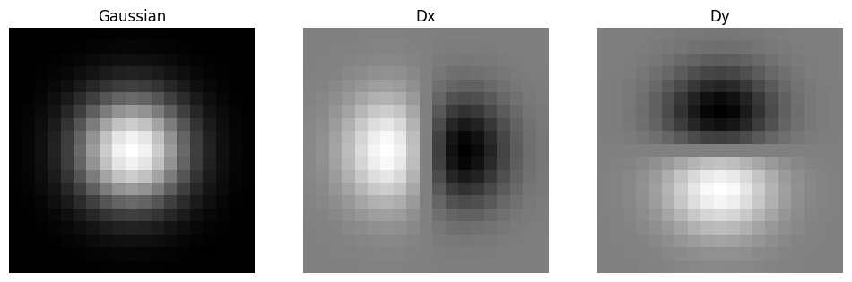
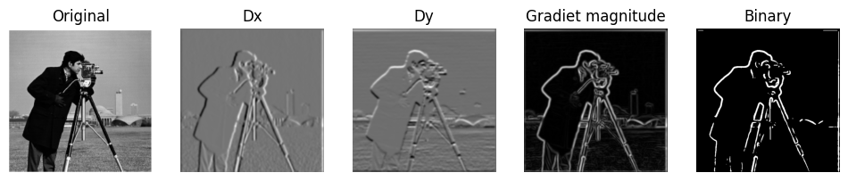

Part 1 — Fun with Filters
1.1 Convolutions from Scratch
I implemented 2D convolution with: (a) four nested loops, (b) two loops with numpy vectorized inner operations, and (c) compared against
scipy.signal.convolve2d. I used zero padding. Below is a snippet for the looped version.
# 4 loops (numpy)
def conv_4(img, kernel):
h, w = img.shape
kh, kw = kernel.shape
pad_h = kh // 2
pad_w = kw // 2
padded_img = np.pad(img, ((pad_h,pad_h),(pad_w,pad_w)), mode="constant", constant_values=0)
kernel = np.flip(kernel)
out = np.zeros(img.shape)
if kernel.sum() != 0:
kernel = kernel / kernel.sum()
for i in range(h):
for j in range(w):
for k in range(kh):
for l in range(kw):
out[i][j] += padded_img[i+k][j+l] * kernel[k][l]
return out # 2 loops (numpy)
def conv_2(img, kernel):
h, w = img.shape
kh, kw = kernel.shape
pad_h = kh // 2
pad_w = kw // 2
padded_img = np.pad(img, ((pad_h,pad_h),(pad_w,pad_w)), mode="constant", constant_values=0)
kernel = np.flip(kernel)
out = np.zeros(img.shape)
if kernel.sum() != 0:
kernel = kernel / kernel.sum()
for i in range(h):
for j in range(w):
mask = padded_img[i:i+kh, j:j+kw]
out[i][j] = np.sum(mask * kernel)
return out # scipy.signal.convolve2d
signal.convolve2d(img, kernel, mode="same", boundary="fill", fillvalue=0) # Dx Dy, and box kernel
dx_kernel = np.array([[1, 0, -1]], dtype = float)
dy_kernel = np.array([[-1],
[0],
[1]], dtype = float)
box_kernel = np.ones((9, 9), dtype=float)
To compare the efficiency in terms of run time, on an image of 300x400, the 4-loop ran for the longest (around 10 seconds to complete the box filter),
and the second longest was the 2-loop, where it took around 0.7 seconds to complete. The fastest was Using the scipy.signal.convolve2d
code, where it took 0.0 second to complete the box filter convolution. As for all boundaries, they were handled by using zero padding instead of reflection. This results in a
darker edges near the border (since the values are convolve with 0).

1.2 Finite Difference Operator
Using Dx and Dy, I computed the edges, gradient magnitude, and a binarized edge map (threshold tuned qualitatively).
The gradient magnitude was calculated by taking the sum of square of the dx and dy images.
The threshold was selected as keeping the 95.75 percentile, keeping anything that's above that. That is, keep the top 5% of values in the min-max normalized gradient image. The trade-off is that with a smaller threshaold, we see more noise in the background (buildings). With a bigger threshold, however, causes us to lose details on the cameraman.

1.3 Derivative of Gaussian (DoG)
To suppress noise, I blurred with a Gaussian before differencing, and also built DoG filters directly by convolving the Gaussian with Dx/Dy and applying the resulting filters to the image—both paths matched numerically.
The difference of blurring with a Gaussian is obvious, the noise are dimmed (say, the grass mostly disappear on the gradient magnitde image) and the real edges are thicker.
We can see that there is no difference in the images where we convolve the images with the gaussian and the dx, dy, and the images that we directly convolve the gaussian with the dx, dy, and then apply to the images.

